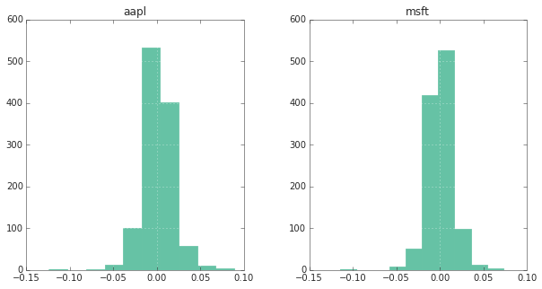
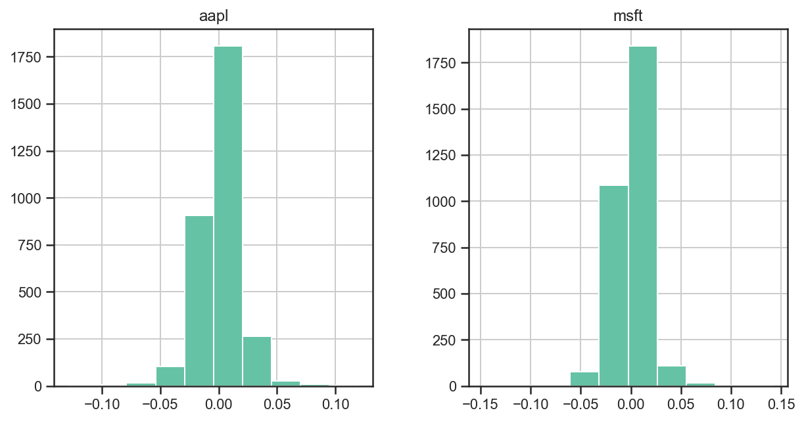
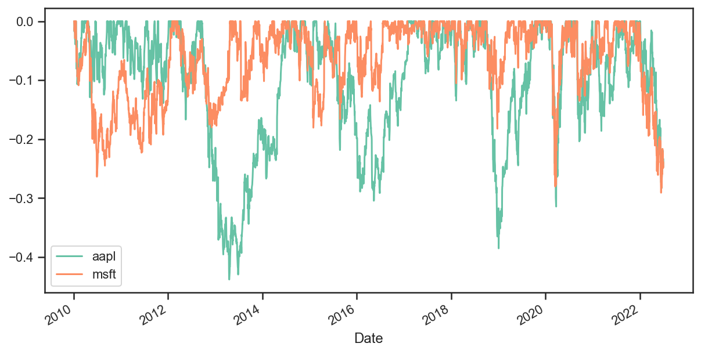

Introduction¶
import ffn
%matplotlib inline
# download price data from Yahoo! Finance. By default,
# the Adj. Close will be used.
prices = ffn.get('aapl,msft', start='2010-01-01')
# let's compare the relative performance of each stock
# we will rebase here to get a common starting point for both securities
ax = prices.rebase().plot(figsize=(10, 5))

# now what do the return distributions look like?
returns = prices.to_returns().dropna()
ax = returns.hist(figsize=(10, 5))

# ok now what about some performance metrics?
stats = prices.calc_stats()
stats.display()
Stat aapl msft
------------------- ---------- ----------
Start 2010-01-04 2010-01-04
End 2022-06-30 2022-06-30
Risk-free rate 0.00% 0.00%
Total Return 1992.09% 979.11%
Daily Sharpe 1.00 0.87
Daily Sortino 1.66 1.45
CAGR 27.58% 20.99%
Max Drawdown -43.80% -29.08%
Calmar Ratio 0.63 0.72
MTD -8.14% -5.53%
3m -22.98% -17.98%
6m -23.07% -23.98%
YTD -22.79% -23.30%
1Y 0.40% -4.42%
3Y (ann.) 40.64% 24.96%
5Y (ann.) 32.03% 31.81%
10Y (ann.) 22.43% 26.28%
Since Incep. (ann.) 27.58% 20.99%
Daily Sharpe 1.00 0.87
Daily Sortino 1.66 1.45
Daily Mean (ann.) 28.42% 22.34%
Daily Vol (ann.) 28.40% 25.55%
Daily Skew -0.10 0.01
Daily Kurt 5.34 8.60
Best Day 11.98% 14.22%
Worst Day -12.86% -14.74%
Monthly Sharpe 1.08 1.04
Monthly Sortino 2.26 2.16
Monthly Mean (ann.) 29.20% 22.31%
Monthly Vol (ann.) 27.00% 21.39%
Monthly Skew -0.09 0.11
Monthly Kurt -0.33 0.41
Best Month 21.66% 19.63%
Worst Month -18.12% -15.14%
Yearly Sharpe 0.84 1.04
Yearly Sortino 4.34 3.73
Yearly Mean 28.54% 25.14%
Yearly Vol 33.85% 24.20%
Yearly Skew 0.47 -0.60
Yearly Kurt -0.27 -0.18
Best Year 88.96% 57.56%
Worst Year -22.79% -23.30%
Avg. Drawdown -4.29% -3.21%
Avg. Drawdown Days 29.95 25.20
Avg. Up Month 7.58% 5.39%
Avg. Down Month -5.20% -4.53%
Win Year % 75.00% 83.33%
Win 12m % 80.58% 90.65%
# what about the drawdowns?
ax = stats.prices.to_drawdown_series().plot(figsize=(10, 5))
